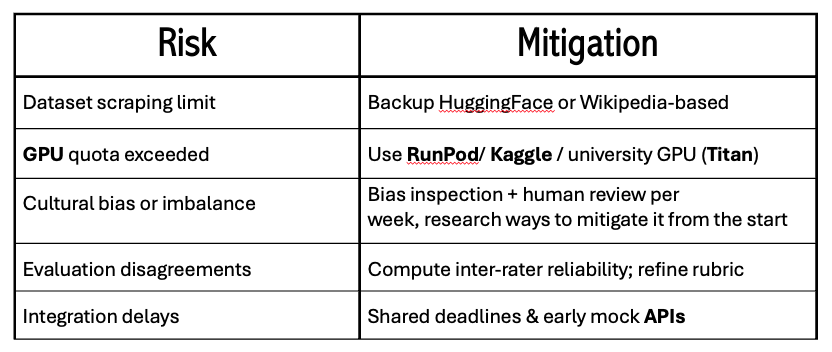
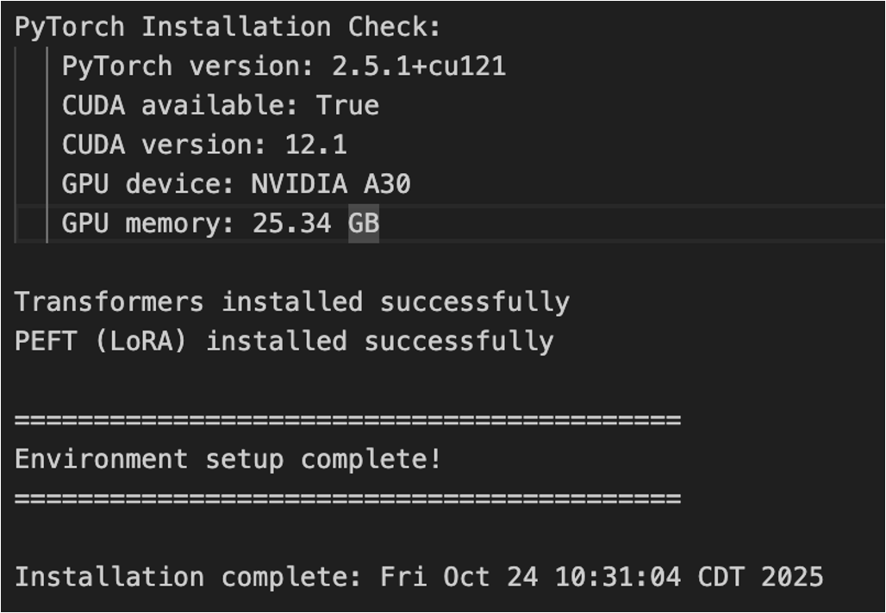
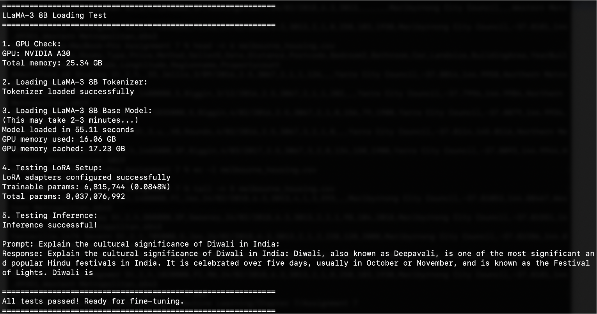
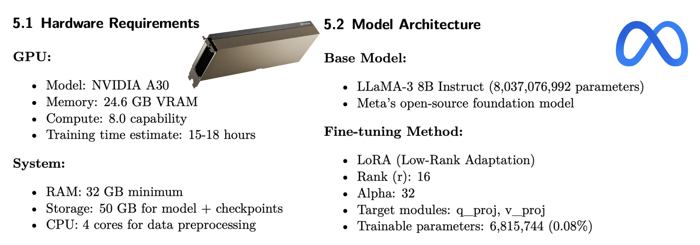

The team established the foundational plans, infrastructure, evaluation framework, and architecture needed to begin data collection and model fine-tuning in Week 1.
2.2 Rohan Aby Deliverables
AI assistance: ChatGPT was used to develop the CSI framework document, 100-question baseline evaluation dataset, Evaluation pipeline code and the Metrics definition document (accessed Nov, 2025).
The Cultural Sensitivity Index Framework uses 4 main variables to judge the model’s performance. The variables used to judge the models performance are accuracy, tone, context, and empathy. Accuracy evaluates factual correctness about cultural practices, festivals, history, and social norms. Tone measures how respectful, inclusive, and free of stereotypes or bias the language is. Context assesses whether the response reflects appropriate cultural framing and situational relevance. Empathy captures understanding of lived experience, cultural values, and emotional nuance. Each of these four criteria is multiplied by a number which indicates how important the criteria each is in the total CSI score. The score for each response is as follows
From this formula we can infer that accuracy and tone are more important than context or Empathy. Each of the variables are scored on a scale from one to five. One being the lowest score and five being the best score.
compute_csi_scores.py - Calculates the Cultural Sensitivity Index CSI) for model responses using a human or rubric-based scoring template. The code is shown below.
import pandas as pddef compute_csi_score(row): weights = {"Accuracy": 0.3, "Tone": 0.3, "Context": 0.2, "Empathy": 0.2}returnsum(row[k] * w for k, w in weights.items())def apply_csi_rubric(df): df["CSI_Score"] = df.apply(compute_csi_score, axis=1)return df[["Question_ID", "Accuracy", "Tone", "Context", "Empathy", "CSI_Score"]]
compare_models.py - Aggregates and compares metrics across multiple models (RAG, Fine-Tuned, Baseline). The code is shown below.
Williams first deliverable was to establish a good architecture to our original plan, creating a development roadmap and risk mitigation table along with the architectural diagram.
Architecture Diagram
Development Roadmap Risk Mitigation Table

Risk Mitigation Table
Now that the (original) layout of the project was set in stone, validation of the data needed to be done to ensure the new and improved model performs accurately with no risk of bad data interfering with ConLingo 2.0.
2.4 Suwilanji Mwanza Deliverables
2.4.1 Overview of the Week 1 Deliverable
The Week 1 deliverable lays the foundation for building a culturally grounded fine-tuning dataset for the ConLingo AI system, with a focus on data collection. Establishing a data collection strategy for the fine-tuning implementation.
2.4.2 Week 1 Deliverables:
Identify example sources for data
Set up data collection infrastructure
Collect the initial 500 examples of data
Ethics and bias check - ensuring ethical data collection
2.4.3 What Was Accomplished:
2.4.3.1 1. Arriving at a Definition of Culture
To create a culturally diverse dataset representative of India, I first established a working definition of culture and aligned it with the dataset categories created based off of the culture definition for ConLingo.
Using the sociological framework from Pressbooks Howard Community College and supplemental examples, I identified the following components of culture:
Symbols: gestures, icons, religious symbols, shared images.
Language: idioms, semantics, dialects, scripts; linguistic relativity (Sapir–Whorf hypothesis).
Norms: rules/expectations for behavior (e.g., respect, authority, hospitality).
Rituals: ceremonies, festivals, rites of passage.
Values: moral beliefs regarding good/bad, desirable/undesirable.
Artifacts: material objects—food, dress, architecture, arts.
These became the seven cultural buckets used for dataset classification purposes: Symbolic, Language, Norms, Rituals, Values, Artifacts, Religious. The goal was that the data sets we found must be able to fit into at least one of these 7 categories.
2.4.3.2 2. Identify Examples from Sources
I began by searching for an existing dataset or model that already contains high-quality data for the region we are targeting. A dataset that I discovered was AI4Bharat, and thus a major focus of Week 1 was exploring the AI4Bharat ecosystem (AI4Bharat, n.d.), as it contains the largest curated resources on Indian languages and cultural content.
AI4Bharat is an India-based company with large partnerships with Google and Microsoft, aiming to develop AI models that reflect Indian culture and understanding. They have heavily invested in curating datasets that represent their culture.
Key findings included:
2.4.4Core AI4Bharat Models (Khan et al., 2024)
IndicBERT: A multilingual ALBERT-based model covering 12 major Indic languages; trained on ~9B tokens.
IndicBART: A seq2seq model suitable for translation and generation tasks.
IndicInstruct: Instruction-following datasets for English/Hindi, including WikiHow, FLAN v2, Dolly, and more.
IndicXTREME: Benchmark suite for classification, QA, structure prediction, and retrieval.
FBI Framework: Meta-evaluation system assessing evaluator robustness (Doddapaneni et al., 2024)
IndicGLUE: Benchmark for NLU across 11 Indic languages.
Naamapadam: The largest named-entity-annotated dataset for Indic languages.
IndicNLG Benchmark: Natural language generation tasks across Indic languages.
MILU: Multi-domain Indic understanding benchmark.
IndicNLP Corpora: 8.9B-token dataset; cultural topics across major languages.
These sources were great as they ranged from data sets that can be used to pre-train a model to evaluation frameworks and the like. Many of them were millions to billions of data points, which is great. They had many of the Indian languages covered, with manually collected and transcribed data.
I moved into looking at additional data sources, besides the large AI4Bharat corpus.
2.4.6Additional Data Sources Consulted
These datasets supplement cultural categories not fully represented in AI4Bharat:
Reddit India Communities: r/india, r/AskAnIndian, r/hinduism, r/Christianity (via PRAW).
World Values Survey (India subset): moral, political, and social values insights.
Pew India Survey: interfaith relations, religion, nationalism, caste, and social norms.
Common Crawl (India-filtered): festival mentions, cultural knowledge, news.
Reddit would be useful for finding out what topics are relevant today in the India region (r/India). The data would also be more conversational. However, after further exploration, using the API for Reddit would not be allowed, as they have a policy stating that their data cannot be used for training an AI model.
The World Values Survey is a survey that has collected data on the values, beliefs, and attitudes of people in various countries. The Wave 7 has an India survey that aims to see how these beliefs change over time, and the data is free to use and access. (World Values Survey Association, n.d.)
The Pew India Survey Data set is a large survey that included 29,999 Indian adults about “religious beliefs and practices, religious identity, nationalism, and tolerance in Indian society. The survey was administered face-to-face from Nov. 17, 2019, to March 23, 2020.” (Sahgal & Evans, 2021)
Common Crawl is a web scraping application that maintains a large corpus of petabytes of data, regularly collected, which contains web page data. The idea with the data set was to filter by region; however, that is not how data collection would work. Alternatively, you would need to be on a different AWS server to access region-specific data. It is a bit more complex and was ultimately ruled out. (Common Crawl, n.d.).
2.4.7 3. Cultural Buckets & Dataset Categorization
Using the cultural definition and dataset sources described above, I asked AI to create a cultural bucket table, placing each dataset into the dominant cultural dimension(s) it represents. I also asked it to search for additional data sets that would be good additions to each bucket for further exploration.
2.4.7.1Cultural Category Table
Category
Description / Focus
Existing Datasets
Gaps / Suggested Additions
Symbolic
Myths, icons, symbols, imagery in religion or national identity.
Sangraha, IndicNLP, Reddit (r/hinduism, r/India), Pew Survey (sections on national pride).
Add: Indian mythological texts (Mahabharata, Ramayana excerpts from Project Gutenberg); Emblem datasets from Indian Heritage Data Portal.
Pew India Survey, Sangraha, IndicBERT, Reddit (r/Hinduism, r/Christianity), Common Crawl.
Add: Sacred Books of the East (digitized translations), Digital Library of India scripture scans.
These buckets were cross-referenced with the 5,000+ cultural examples targeted for the fine-tuning dataset.
2.4.8 4. Fine-Tuning Process & How the Data Fits
(High-level outline used for Week 1 documentation)
Additionally, to begin preparing for the fine-tuning process, I conducted preliminary research on the data standards and types required for fine-tuning. What type of data is best for he collected (and categorized) data feeds into the fine-tuning pipeline is as follows:
Stage
Task- relevant to India datasets
(1) Base Fine-Tuning
General Indian language understanding.
(2) Instruction Fine-Tuning
Conversational, context-aware behavior.
(3) Cultural Alignment
Teach norms, values, and religious sensibility.
(4) Ethical / Alignment Fine-Tuning
Ensure responses are Helpful, Honest, Harmless (HHH).
2.4.9Step 1: Data Curation
Pull data from AI4Bharat, World Values Survey, Pew, and other data sources,
Organize by cultural category.
2.4.10Step 2: Preprocessing
Clean text: remove noise, normalize, and keep originality.
Convert to instruction-response pairs for LLaMA-based fine-tuning. This would only be applicable if we do Supervised Learning.
This will be a major adjustment to the data as most data does not come in this format.
Tag metadata:
region
tone
language
2.4.11Step 3: Dataset Construction
Build a 5,000+ example fine-tuning dataset.
Ensure balance across categories (symbolic, norms, rituals, values, etc.).
Ensure access across languages (Hindi, Tamil, Telugu, Malayalam, Bengali, etc.).
2.4.12Step 4: Fine-Tuning Setup
Select model: Possibly LLaMA-3 8B (best fit for Titan GPU).
2.4.13Step 5: Evaluation Plan Preview
Use the Cultural Sensitivity Index (CSI) developed in Week 1.
Compare:
RAG baseline (Original ConLingo)
Base LLaMA-3 (Example model)
Fine-tuned LLaMA-3 (Example model)
Conduct both automated testing and human evaluation.
The Week 1 work ensures that the training data is valid, representative, culturally sensitive, and ready for preprocessing in Week 2 and fine-tuning in Week 3.
2.4.14 AI assistance:
“AI assistance: ChatGPT was used to organize and summarize my Word doc of the work I did to put on my QMD for week 1.”
“AI assistance: ChatGPT was used to organize my data sources into the respective cultural buckets.”
2.5 Moses Mandale Deliverables
AI assistance: Claude Sonnet 4.5 was used to create commands that I ran on Titan to get all the GPU specs available on Titan’s GPU Nodes. Through this I was able to find out that they are NVIDIA A30 GPUs with 24.6 GB of VRAM. After doing some thorough research on Google about the Candidate base models, I then had a debate with Claude Sonnet 4.5 about which base model would fit and after that debate the LlaMA-3 8B Instruct was the best fit. Claude Sonnet 4.5 was used to troubleshoot python package version conflicts and was able to assist with adding version numbers to the packages in the requirements.txt file allowing me to setup the Titan environment for the training correctly. (accessed Nov, 2025).
2.5.1 Overview
Week 1 focused on establishing the technical foundation for fine-tuning a large language model (LLM) with Indian cultural awareness. The primary deliverables included researching and selecting an appropriate base model, configuring the Titan GPU environment for model training, conducting baseline tests, and documenting technical specifications for the project.
2.5.2 Model Selection Process
2.5.2.1 Evaluation Criteria
The model selection process evaluated five candidate models based on three critical criteria:
Compatibility with Hardware: The model must fit within the 24.6 GB VRAM available on the NVIDIA A30 GPU
Training Feasibility: The model must be trainable within a reasonable timeframe (15-18 hours estimated)
Cultural Reasoning Capability: The model must have sufficient capacity to learn and generate culturally nuanced responses
2.5.2.2 Candidate Models Comparison
Model
Description
Why Consider It?
Why NOT Use It?
GPT-2 (1.5B)
Older OpenAI model from 2019
Free, well-documented, easy to train
Too old - poor at complex cultural reasoning
DistilGPT-2
Smaller, faster version of GPT-2
Very fast to train, low memory
Too small - won’t capture cultural nuances
IndicBERT
Model trained on Indian languages
Made for Indian content
Only understands, doesn’t generate well
GPT-4o mini (API)
OpenAI’s newest small model
Very smart, easy to use via API
Can’t truly fine-tune it for deep learning
LLaMA-3 8B Instruct
Meta’s powerful open-source model
Perfect size, good at reasoning, you control it, fits in 24.6 GB GPU
SELECTED - Best option for our setup
2.5.2.3 Selection Rationale
LLaMA-3 8B Instruct was selected as the optimal base model for the following reasons:
Parameter Count: With 8 billion parameters, the model provides sufficient capacity for learning cultural nuances without being prohibitively large
Hardware Compatibility: The model requires approximately 16-17 GB of GPU memory when loaded in half-precision (float16), well within the A30’s 24.6 GB capacity
Open-Source License: Meta’s permissive license allows full control over fine-tuning and deployment
Instruction-Tuned: The “Instruct” variant has been pre-trained to follow instructions, providing a strong foundation for conversational applications
Community Support: Extensive documentation and community resources facilitate troubleshooting and optimization
Key Technical Specifications: - Model Parameters: 8,037,076,992 (8.03 billion) - Architecture: Decoder-only transformer - Precision: Half-precision (float16) for memory efficiency - License: Meta LLaMA 3 Community License
2.5.3 Titan GPU Environment Setup
2.5.3.1 Hardware Configuration
The Titan supercomputer provided the computational infrastructure for this project. The allocated resources included:
System Specifications: - RAM: 32 GB minimum - Storage: 50 GB for model and checkpoints - CPU: 4 cores for data preprocessing
2.5.3.2 Software Environment
The environment was configured with the following key components:
Core Dependencies:
# PyTorch with CUDA supporttorch==2.5.1+cu121# Transformers ecosystemtransformers==4.36.0accelerate==0.25.0peft==0.7.0 # For LoRA fine-tuning# Data processingdatasets==2.15.0pandas==2.1.0
LoRA (Low-Rank Adaptation) is a parameter-efficient fine-tuning technique that adds small trainable adapter layers to the model while keeping the original weights frozen. This approach reduces memory requirements and training time while maintaining model quality.
2.5.3.3 Installation Process
The environment setup involved creating a Python virtual environment and installing dependencies:
# Create virtual environmentpython3-m venv llama_envsource llama_env/bin/activate# Install PyTorch with CUDA 12.1pip install torch torchvision torchaudio \--index-url https://download.pytorch.org/whl/cu121# Install Transformers and PEFTpip install transformers accelerate peft bitsandbytes
The installation completed successfully, confirming GPU availability and proper CUDA configuration:

Titan GPU environment setup confirmation
2.5.4 Baseline Testing
2.5.4.1 Model Loading Test
Initial tests verified that the LLaMA-3 8B model could be successfully loaded onto the GPU:
Test Results: - Tokenizer loading: Successful - Model loading time: ~55 seconds - GPU memory usage: 16.06 GB (65% of available VRAM) - GPU memory cached: 17.23 GB
2.5.4.2 LoRA Configuration Test
LoRA adapters were configured to enable efficient fine-tuning:
LoRA Parameters: - Rank (r): 16 - Alpha: 32 - Target modules: q_proj, v_proj (query and value projection layers) - Dropout: 0.05 - Trainable parameters: 6,815,744 (0.08% of total parameters)
This configuration means only 0.08% of the model’s parameters need to be trained, dramatically reducing memory requirements and training time while maintaining effectiveness.

Baseline test output showing model loading and LoRA setup
2.5.4.3 Inference Test
A simple inference test confirmed the model’s ability to generate culturally relevant responses:
Test Prompt: “Explain the cultural significance of Diwali in India.”
Model Response: The model successfully generated a coherent explanation of Diwali, describing it as the Festival of Lights celebrated over five days, typically in October or November. The response demonstrated the base model’s existing cultural knowledge and confirmed that the inference pipeline was functioning correctly.
2.5.5 Technical Specifications Documentation
2.5.5.1 Hardware Requirements
Component
Specification
GPU Model
NVIDIA A30
GPU Memory
24.6 GB VRAM
GPU Compute
8.0 capability
Training Time Estimate
15-18 hours
2.5.5.2 Model Architecture
Specification
Value
Base Model
LLaMA-3 8B Instruct
Total Parameters
8,037,076,992
Architecture
Decoder-only transformer
Context Window
8,192 tokens
2.5.5.3 Fine-Tuning Configuration
Parameter
Value
Explanation
Fine-tuning Method
LoRA (Low-Rank Adaptation)
Parameter-efficient technique
LoRA Rank (r)
16
Controls adapter size
LoRA Alpha
32
Scaling factor for adapters
Target Modules
q_proj, v_proj
Query and value projections
Trainable Parameters
6,815,744 (0.08%)
Only adapters are trained
Total Parameters
8,043,892,736
Base + adapter parameters

Technical specifications diagram
2.5.5.4 System Configuration
Directory Structure:
/home/mmadale/CSC463/conlingo/
├── data/
│ ├── raw/ # Original datasets
│ ├── processed/ # Cleaned and formatted data
│ └── test/ # Test sets
├── models/
│ ├── base/ # LLaMA-3 base model
│ ├── finetuned/ # Fine-tuned models
│ └── checkpoints/ # Training checkpoints
├── scripts/
│ ├── setup/ # Environment setup scripts
│ ├── training/ # Training scripts
│ └── evaluation/ # Evaluation scripts
├── logs/ # Training and job logs
└── llama_env/ # Python virtual environment
2.5.6 Key Achievements
Week 1 successfully established the technical foundation for the project:
Model Selection: Identified and justified LLaMA-3 8B Instruct as the optimal base model
Environment Configuration: Set up a fully functional GPU environment on Titan with all required dependencies
Baseline Validation: Confirmed the model loads correctly, uses GPU resources efficiently, and can generate responses
LoRA Integration: Configured parameter-efficient fine-tuning with only 0.08% of parameters trainable
Documentation: Created comprehensive technical specifications for reproducibility
2.5.7 Challenges and Solutions
Challenge 1: HuggingFace Authentication - Issue: LLaMA-3 requires accepting Meta’s license agreement through HuggingFace - Solution: Created HuggingFace account, accepted license terms, and configured authentication token
Challenge 2: GPU Memory Management - Issue: Full-precision model (float32) would exceed 24.6 GB VRAM - Solution: Used half-precision (float16) loading, reducing memory footprint to ~16 GB
Challenge 3: Training Efficiency - Issue: Fine-tuning all 8 billion parameters would be computationally expensive - Solution: Implemented LoRA adapters, training only 6.8 million parameters (0.08%)


 Risk Mitigation Table
Risk Mitigation Table